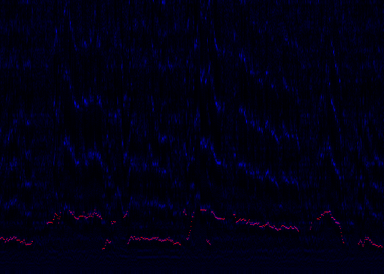

Metody ilościowe w analizie dynamiki konwersacji
Marcin Kurczych
Zarys
- Projekt w składzie Joanna Rączaszek-Leonardi, Franciszek Rakowski,. Marcin Kurczych, Alicja Radkowska, Dariusz Plewczyński.
- 24 rozmowy nagrane, połowa na temat wzbudzający emocje, połowa na neutralny.
- Po zakończeniu konwersacji każda osoba wypełniała kwestionariusz.
- Cel: odnaleźć zmienne charakteryzujące rozmowę, które będzie można powiązać z zaobserwowanymi różnicami
Kwestionariusz
- Przykłady miar kwestionariuszowych:
- Czy rozmowa była rozwlekła?
- Czy rozmowa była dynamiczna?
- Czy czułaś/eś się zrozumiana/y przez rozmówcę?
- Czy przewodziłaś/eś rozmowie?
- Pytania addytywne i różnicowe.
- Składowe główne.
Recurrence Quantification Analysis
- Metoda pozwalająca na analizę złożonych systemów dynamicznych.
- Skupia się na powtórzeniach w zachowaniu.
- Czas dyskretny.
- Na przestrzeni stanów ustalamy odległość.
- Recurrence Plot - macierz mająca na pozycji \((t_1, t_2)\) wartość 1, jeśli odległość stanów w momentach \(t_1\) i \(t_2\) jest mała, 0 w przeciwnym wypadku.
RQA - miary
- \(\mathcal{l}(k)\): liczba linii długości \(k\)
- \(\mathcal{p}(k) = \sum_{i=1}^{k}\mathcal{l}(i)\): liczba punktów na liniach nie krótszych niż \(k\)
- \(RR = \frac{\mathcal{p}(1)}{n^2} \): część zaczerniona
- \(DET = \frac{\mathcal{p}(l_{min})}{\mathcal{p}(1)} \): jaka część punktów na długich liniach
- \(L = \frac{\sum_{k} \mathcal{l}(k)k}{\sum_{k} \mathcal{l}(k)}\): średnia długość linii
- \(LENTR = - \sum_k p(k) \log p(k)\), gdzie \(p(k) = \frac{\mathcal{l}(k)}{\sum_{k} \mathcal{l}(k)}\): entropia rozkładu linii
Współczynnik entropii
- Entropię względną możemy określić wzorem \(H(X \mid Y) = H((X, Y)) - H(Y)\).
- Jeśli \(X\) i \(Y\) niezależne, to \(H(X \mid Y) = H(X)\), jeśli \(X\) deterministycznie wyznaczone przez \(Y\), \(H(X \mid Y) = 0\).
- W procesach stochastycznych mamy \(H(X_t) \geqslant H(X_t \mid X_{t-1}) \geqslant H(X_t \mid (X_{t-1}, X_{t-2})) \geqslant ... \).
- Ciąg taki zbiega to pewnej granicy. Zwana jest ona współczynnikiem entropii.
- W przypadku skończonych próbek niemożliwe jest wyznaczenie go w prosty sposób.
Kodowanie
Podstawowe 4 zdarzenia (mówi jedna osoba, mówi druga, mówią obie, cisza) zamieniano na ciąg typu:
- Zdarzenia, z czasem,
- zdarzenia, bez czasu,
- przedziały, co pół sekundy.
Dodatkowo użyliśmy modelu z 6 rodzajami stanów, rozbijając ciszę i sprzeczki na 2 typy, w zależności po czyjej wypowiedzi nastąpiły.
Analiza częstotliwości

Korelacje
W modelu zdarzeniowym:
- entropia bezwzględna z rozwlekłością: 0.68
- RR4 z rozwlekłością: -0.66
W analizie częstotliwości bazowej:
- DET z dynamicznością: -0.71
- DET pochodnej z dynamicznością: 0.66
- DET pochodnej z naturalnością: 0.64
Podane korelacje Spearmana, P < 0.01
Możliwości
- Rozdzielenie sygnału dźwiękowego.
- Pobieranie danych ciągłych (fizjologiczne, regularne ocenianie).
- Wpływanie na rozmowę (przestraszenie rozmówców?).
- Rozwiązywanie przez pary zadania.